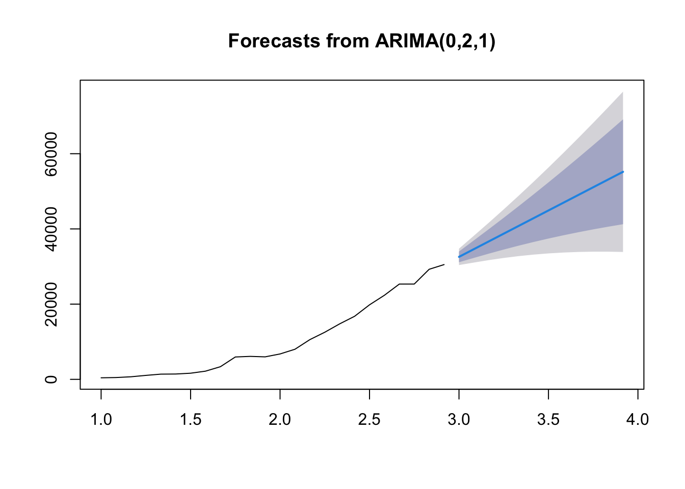

A deep dive into R’s superior statistical modeling capabilities, from GLMs to mixed models
Published
June 26, 2025
1 Introduction
When it comes to statistical modeling, R was built from the ground up for this purpose. While Python has made significant strides with libraries like statsmodels and scipy.stats, R’s statistical ecosystem remains unmatched in depth, breadth, and ease of use.
2 Generalized Linear Models (GLMs)
2.1 R Approach
Code
# Load required librarieslibrary(stats)# Fit a logistic regression modelmodel_r <-glm(Species ~ Sepal.Length + Sepal.Width, data = iris, family =binomial(link ="logit"))# Comprehensive model summarysummary(model_r)
Call:
glm(formula = Species ~ Sepal.Length + Sepal.Width, family = binomial(link = "logit"),
data = iris)
Coefficients:
Estimate Std. Error z value Pr(>|z|)
(Intercept) -437.2 128737.9 -0.003 0.997
Sepal.Length 163.4 45394.8 0.004 0.997
Sepal.Width -137.9 44846.1 -0.003 0.998
(Dispersion parameter for binomial family taken to be 1)
Null deviance: 1.9095e+02 on 149 degrees of freedom
Residual deviance: 2.7060e-08 on 147 degrees of freedom
AIC: 6
Number of Fisher Scoring iterations: 25
import pandas as pdimport statsmodels.api as smfrom sklearn.linear_model import LogisticRegression# Fit logistic regressionX = iris[['sepal_length', 'sepal_width']]y = (iris['species'] =='setosa').astype(int)# Using statsmodelsmodel_py = sm.GLM(y, sm.add_constant(X), family=sm.families.Binomial())result = model_py.fit()print(result.summary())# Diagnostic plots require additional workimport matplotlib.pyplot as pltimport seaborn as sns
3 Mixed Effects Models
3.1 R’s Superior Implementation
Code
library(lme4)# Fit a mixed effects modelmixed_model <-lmer(Reaction ~ Days + (1+ Days | Subject), data = sleepstudy)# Comprehensive outputsummary(mixed_model)
Linear mixed model fit by REML ['lmerMod']
Formula: Reaction ~ Days + (1 + Days | Subject)
Data: sleepstudy
REML criterion at convergence: 1743.6
Scaled residuals:
Min 1Q Median 3Q Max
-3.9536 -0.4634 0.0231 0.4634 5.1793
Random effects:
Groups Name Variance Std.Dev. Corr
Subject (Intercept) 612.10 24.741
Days 35.07 5.922 0.07
Residual 654.94 25.592
Number of obs: 180, groups: Subject, 18
Fixed effects:
Estimate Std. Error t value
(Intercept) 251.405 6.825 36.838
Days 10.467 1.546 6.771
Correlation of Fixed Effects:
(Intr)
Days -0.138
# Python has limited mixed effects supportimport statsmodels.api as smfrom statsmodels.regression.mixed_linear_model import MixedLM# Much more complex syntax and limited functionality# No equivalent to lme4's comprehensive output
4 Time Series Analysis
4.1 R’s Time Series Ecosystem
Code
library(forecast)library(tseries)# Fit ARIMA modelts_data <-ts(airmiles, frequency =12)arima_model <-auto.arima(ts_data)# Comprehensive diagnosticscheckresiduals(arima_model)
Ljung-Box test
data: Residuals from ARIMA(0,2,1)
Q* = 4.7529, df = 4, p-value = 0.3136
Model df: 1. Total lags used: 5
Code
# Forecastingforecast_result <-forecast(arima_model, h =12)plot(forecast_result)

4.2 Python’s Fragmented Approach
from statsmodels.tsa.arima.model import ARIMAfrom statsmodels.tsa.stattools import adfuller# More complex setup required# Limited diagnostic tools# Separate packages needed for different functionality
5 Survival Analysis
5.1 R’s Comprehensive Survival Tools
Code
library(survival)library(survminer)# Fit Cox proportional hazards modelcox_model <-coxph(Surv(time, status) ~ age + sex + ph.ecog, data = lung)# Comprehensive outputsummary(cox_model)
Call:
coxph(formula = Surv(time, status) ~ age + sex + ph.ecog, data = lung)
n= 227, number of events= 164
(1 observation deleted due to missingness)
coef exp(coef) se(coef) z Pr(>|z|)
age 0.011067 1.011128 0.009267 1.194 0.232416
sex -0.552612 0.575445 0.167739 -3.294 0.000986 ***
ph.ecog 0.463728 1.589991 0.113577 4.083 4.45e-05 ***
---
Signif. codes: 0 '***' 0.001 '**' 0.01 '*' 0.05 '.' 0.1 ' ' 1
exp(coef) exp(-coef) lower .95 upper .95
age 1.0111 0.9890 0.9929 1.0297
sex 0.5754 1.7378 0.4142 0.7994
ph.ecog 1.5900 0.6289 1.2727 1.9864
Concordance= 0.637 (se = 0.025 )
Likelihood ratio test= 30.5 on 3 df, p=1e-06
Wald test = 29.93 on 3 df, p=1e-06
Score (logrank) test = 30.5 on 3 df, p=1e-06
Code
# Survival curvesfit <-survfit(Surv(time, status) ~ sex, data = lung)ggsurvplot(fit, data = lung, pval =TRUE)
5.2 Python’s Limited Survival Analysis
# Python has very limited survival analysis capabilities# Most implementations are basic or require external packages# No equivalent to R's comprehensive survival analysis ecosystem
6 Key Advantages of R for Statistical Modeling
6.1 1. Built-in Statistical Functions
R provides comprehensive statistical functions out of the box:
Code
# T-test with detailed outputt.test(extra ~ group, data = sleep)
Welch Two Sample t-test
data: extra by group
t = -1.8608, df = 17.776, p-value = 0.07939
alternative hypothesis: true difference in means between group 1 and group 2 is not equal to 0
95 percent confidence interval:
-3.3654832 0.2054832
sample estimates:
mean in group 1 mean in group 2
0.75 2.33
Code
# ANOVA with post-hoc testsaov_result <-aov(weight ~ group, data = PlantGrowth)TukeyHSD(aov_result)
Tukey multiple comparisons of means
95% family-wise confidence level
Fit: aov(formula = weight ~ group, data = PlantGrowth)
$group
diff lwr upr p adj
trt1-ctrl -0.371 -1.0622161 0.3202161 0.3908711
trt2-ctrl 0.494 -0.1972161 1.1852161 0.1979960
trt2-trt1 0.865 0.1737839 1.5562161 0.0120064
Code
# Correlation with significance testingcor.test(mtcars$mpg, mtcars$wt, method ="pearson")
Pearson's product-moment correlation
data: mtcars$mpg and mtcars$wt
t = -9.559, df = 30, p-value = 1.294e-10
alternative hypothesis: true correlation is not equal to 0
95 percent confidence interval:
-0.9338264 -0.7440872
sample estimates:
cor
-0.8676594
6.2 2. Comprehensive Model Diagnostics
R provides extensive diagnostic tools:
Code
# Model diagnostics for linear regressionlm_model <-lm(mpg ~ wt + cyl, data = mtcars)# Comprehensive diagnostic plotspar(mfrow =c(2, 2))plot(lm_model)
Native statistical capabilities built into the language
Comprehensive model diagnostics and validation tools
Extensive package ecosystem for specialized analyses
Better statistical output with publication-ready results
Easier syntax for statistical operations
While Python excels in machine learning and general programming, R remains the superior choice for traditional statistical modeling, especially in research and academic settings.
---title: "Statistical Modeling: Why R Outperforms Python"description: "A deep dive into R's superior statistical modeling capabilities, from GLMs to mixed models"date: 2025-06-26categories: [statistics, modeling, comparison]---## IntroductionWhen it comes to statistical modeling, R was built from the ground up for this purpose. While Python has made significant strides with libraries like `statsmodels` and `scipy.stats`, R's statistical ecosystem remains unmatched in depth, breadth, and ease of use.## Generalized Linear Models (GLMs)### R Approach```{r}# Load required librarieslibrary(stats)# Fit a logistic regression modelmodel_r <-glm(Species ~ Sepal.Length + Sepal.Width, data = iris, family =binomial(link ="logit"))# Comprehensive model summarysummary(model_r)# Diagnostic plotspar(mfrow =c(2, 2))plot(model_r)```### Python Approach```pythonimport pandas as pdimport statsmodels.api as smfrom sklearn.linear_model import LogisticRegression# Fit logistic regressionX = iris[['sepal_length', 'sepal_width']]y = (iris['species'] =='setosa').astype(int)# Using statsmodelsmodel_py = sm.GLM(y, sm.add_constant(X), family=sm.families.Binomial())result = model_py.fit()print(result.summary())# Diagnostic plots require additional workimport matplotlib.pyplot as pltimport seaborn as sns```## Mixed Effects Models### R's Superior Implementation```{r}library(lme4)# Fit a mixed effects modelmixed_model <-lmer(Reaction ~ Days + (1+ Days | Subject), data = sleepstudy)# Comprehensive outputsummary(mixed_model)# Random effectsranef(mixed_model)# Model diagnosticsplot(mixed_model)```### Python's Limited Options```python# Python has limited mixed effects supportimport statsmodels.api as smfrom statsmodels.regression.mixed_linear_model import MixedLM# Much more complex syntax and limited functionality# No equivalent to lme4's comprehensive output```## Time Series Analysis### R's Time Series Ecosystem```{r}library(forecast)library(tseries)# Fit ARIMA modelts_data <-ts(airmiles, frequency =12)arima_model <-auto.arima(ts_data)# Comprehensive diagnosticscheckresiduals(arima_model)# Forecastingforecast_result <-forecast(arima_model, h =12)plot(forecast_result)```### Python's Fragmented Approach```pythonfrom statsmodels.tsa.arima.model import ARIMAfrom statsmodels.tsa.stattools import adfuller# More complex setup required# Limited diagnostic tools# Separate packages needed for different functionality```## Survival Analysis### R's Comprehensive Survival Tools```{r}library(survival)library(survminer)# Fit Cox proportional hazards modelcox_model <-coxph(Surv(time, status) ~ age + sex + ph.ecog, data = lung)# Comprehensive outputsummary(cox_model)# Survival curvesfit <-survfit(Surv(time, status) ~ sex, data = lung)ggsurvplot(fit, data = lung, pval =TRUE)```### Python's Limited Survival Analysis```python# Python has very limited survival analysis capabilities# Most implementations are basic or require external packages# No equivalent to R's comprehensive survival analysis ecosystem```## Key Advantages of R for Statistical Modeling### 1. **Built-in Statistical Functions**R provides comprehensive statistical functions out of the box:```{r}# T-test with detailed outputt.test(extra ~ group, data = sleep)# ANOVA with post-hoc testsaov_result <-aov(weight ~ group, data = PlantGrowth)TukeyHSD(aov_result)# Correlation with significance testingcor.test(mtcars$mpg, mtcars$wt, method ="pearson")```### 2. **Comprehensive Model Diagnostics**R provides extensive diagnostic tools:```{r}# Model diagnostics for linear regressionlm_model <-lm(mpg ~ wt + cyl, data = mtcars)# Comprehensive diagnostic plotspar(mfrow =c(2, 2))plot(lm_model)# Additional diagnosticslibrary(car)vif(lm_model) # Variance inflation factorsdurbinWatsonTest(lm_model) # Autocorrelation test```### 3. **Advanced Statistical Packages**R's CRAN repository hosts specialized statistical packages:- **`nlme`**: Nonlinear mixed effects models- **`mgcv`**: Generalized additive models- **`brms`**: Bayesian regression models- **`rstan`**: Stan integration for Bayesian analysis## Performance Comparison| Feature | R | Python ||---------|---|--------|| GLM Implementation | Native, comprehensive | Basic, requires statsmodels || Mixed Effects | lme4, nlme | Limited options || Time Series | forecast, tseries | Fragmented ecosystem || Survival Analysis | survival, survminer | Very limited || Model Diagnostics | Built-in, extensive | Basic, requires work || Statistical Tests | Comprehensive | Basic |## ConclusionFor statistical modeling, R provides:- **Native statistical capabilities** built into the language- **Comprehensive model diagnostics** and validation tools- **Extensive package ecosystem** for specialized analyses- **Better statistical output** with publication-ready results- **Easier syntax** for statistical operationsWhile Python excels in machine learning and general programming, R remains the superior choice for traditional statistical modeling, especially in research and academic settings.---*Next: [Data Visualization: R's ggplot2 vs Python's matplotlib](/blog/data-visualization-r-vs-python.qmd)*